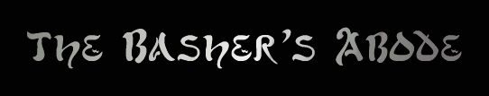

Why do we like to
bash?
1) It can generate a lot of
gold.
2) It gives us essence to offer
our God.
3) It is the fastest method for gaining experience.
This
webpage is dedicated to the bashers of
likes
to "bash" or "hunt" the creatures and/or denizens
of the realm. The term "mob" is short for "mobile".
This
page is filled with information that I hope you will find useful and
informative.
Everyone,
essentially, is a basher because we all advance in levels and experience, but a
"real" basher is not just someone who is high in level.
The
distinctive basher is the one who is dedicated enough to invest both the time
and effort even when they have died to the Demons Lag and
Disconnect
and are not so easily discouraged upon heavy losses. What makes a basher a
basher, at least by my own standards, is not how few times
you
have died or what you can kill, but the fact that by some drive in you, you find
yourself bashing again and again even after all or
any misfortunes.
The
only real good advice anyone can offer you is that the key element to any good
basher is patience. If you're going to stick it out
and
not be dragged down in stagnancy through lack of motivation or laziness, you're
going to make it. If there's a will, there's a way. That's really all there is
to it.
When
you PROBE a mobile, you see beneath its description a list of
things
such
as its weight, its loyalty (if any), what is in it (if anything), as well as a
general
assessment of its strength. These "strength lines" have been organized
and compiled for you in a loose order from strongest to weakest. (Please also
read HELP CONSIDER within the realms...didn't realize this file was here, heh.)
STRONGEST
Glows
with nearly godlike power
Does
not even administer/register your presence as a threat
Exudes
an aura of overwhelming power
Air of Extreme
Stength
Crushingly
Strong
Extraordinarily
strong
Quite
powerful
Not one to be trifled
with
Seems strong
and confident
Exudes a quiet
confidence
Seems
to be unafraid
Appears to lack
strength
Does
not look particularly dangerous
A
humble-looking creature
Relatively
helpless
Weak and feeble
WEAKEST
NOTE:
This line only assesses the general strength and attack
speed
of the mob. It does NOT take into account the fact
that
a mob teams or its difficulty in regards to afflictions. It is
also
on an absolute scale, meaning it is the same for everyone
and
it is not a personal assessment.
|
While I cannot exactly tell you
my bashing routine (part of the Newbie Lowbie -
Enverren Marsh Midbie -
-
Polyargos (except Yudhishthira) Highbie -
Arcadia - -
Nuskuwe Magma Caves Super
Highbie
|
And
here, effectively, is another, more recent list provided by Maya,
taken
from majority
of creatures perform afflictions. Levels
1+ team
- reserve for higher levels) Forestwatch
till higher levels) foxes,
monitor lizards) -
Bloodleeches in |
This
is a giant list of things commonly bashed and the amount of essence they
are
worth when offered to a God via a shrine. Something to notice:
generally
the harder the mob is to kill, the more essence it is worth. It is updated
when
I have time to do these tedious things. *grin*
Click
here to download a .doc file for The Essence List